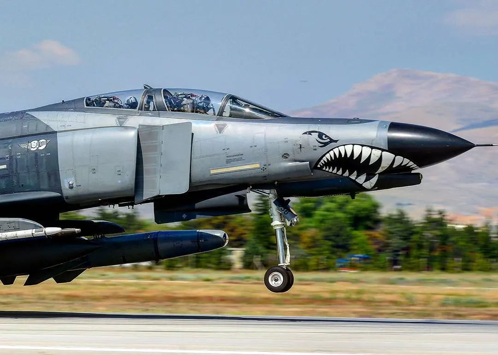

Hakkımızda

AMACIMIZ
Kanatlı bir gençlik, köklerden göklere millî bilinçle kanat çırpan yükselen ve yükselten bir kuşaktır. Bu uğurda bize teslim edilen büyük emaneti koruma aktarma ve doğru bir şekilde yaymak için güvenilir kaynaklarla birçok aşamamızdan geçen eş güdümlü bir sistemle hareket ediyor, her taşı yakut olan bu vatanın semalarında dalgalanan karanlığı yok eden ay yıldızımızın sevgisinden gelen işte bu havacılık sevgisini arttırmak belki de başlatmak adına işe gönül vermiş uzman takımımız ile medeniyet yolunda ilerletmeye çalışıyoruz.